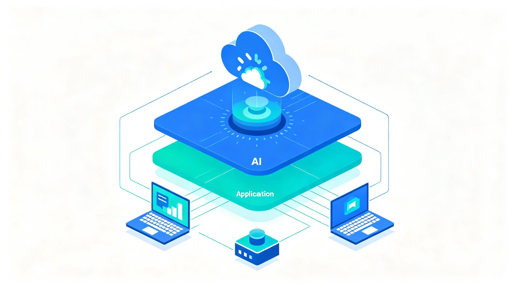

1 项目概述
1.1 项目背景
国家大力推进文旅产业数字化转型，智慧景区建设已成为行业发展趋势。传统景区导览服务长期面临讲解资源不足、信息更新滞后、难以满足游客个性化与深度体验需求等核心痛点。在黄金周或旅游旺季，专业导游供不应求，游客体验大打折扣；而传统的录音导览设备内容固定，无法与游客互动，更缺乏情感连接。景区管理者也难以量化评估导游服务质量，无法精准获取游客真实反馈以优化运营。
本产品基于第十五届中国软件杯大赛A5赛题"景区导览服务AI数字人"的要求，利用AI数字人技术构建一个智能、互动、个性化的景区导览服务系统，推动文旅服务的智能化升级。
1.2 项目目标
开发一个具备多模态交互能力（语音、文本、表情）的AI数字人导游软件，实现以下核心目标：
- 7x24小时智能导览服务：构建全天候在线的"智能导游"，游客可通过手机App或景区终端设备与数字人交互，获得个性化服务
- 多模态自然交互：支持语音输入和文本输入，数字人以语音、表情和口型同步的方式回答，提供接近真人导游的交互体验
- 精准景区知识问答：基于本地景区知识库，准确回答关于景区历史、文化、景点特色等常见问题，事实性问答准确率不低于90%
- 个性化路线推荐：根据游客兴趣偏好（如历史、自然风光等）推荐不同的游览路线和讲解重点
- 管理数据洞察：为景区管理方提供数据看板，包含游客关注点分析、情感趋势报告及核心运营数据
1.3 适用范围与读者对象
本文档面向参赛团队全体成员、指导教师及大赛评审专家，作为产品从需求分析到技术实现的顶层设计指南。文档涵盖系统架构、功能模块、数据设计、接口规范、安全策略、部署方案及测试策略等关键设计维度。
2 需求分析
2.1 业务痛点分析
| 痛点类别 | 具体描述 | 影响程度 |
|---|---|---|
| 导游资源稀缺 | 黄金周或旺季时，专业导游供不应求，游客排队等候时间长 | 高 |
| 信息单向传递 | 传统录音导览设备内容固定，无法与游客互动，无法解答个性化问题 | 高 |
| 缺乏情感连接 | 冰冷的设备难以提供如真人导游般的亲切感和情感互动 | 中 |
| 管理盲区 | 景区管理者难以量化评估导游服务质量，无法精准获取游客真实反馈 | 中 |
2.2 功能性需求
2.2.1 游客交互侧
| 功能编号 | 功能名称 | 功能描述 | 优先级 |
|---|---|---|---|
| F-V01 | 多模态交互 | 支持语音输入和文本输入，数字人以语音、表情和口型同步的方式进行回答 | P0 |
| F-V02 | 智能问答与讲解 | 准确回答关于景区历史、文化、景点特色等常见问题 | P0 |
| F-V03 | 个性化推荐 | 根据游客兴趣（如"对历史感兴趣"或"喜欢自然风光"）推荐不同的游览路线和讲解重点 | P1 |
2.2.2 管理后台侧
| 功能编号 | 功能名称 | 功能描述 | 优先级 |
|---|---|---|---|
| F-A01 | 知识库管理 | 管理员可上传、更新和维护景区的讲解词、文史资料、常见问题及答案等知识文档 | P0 |
| F-A02 | 数字人形象管理 | 可配置数字人的外观、服装、声音等，使其更贴合景区文化特色 | P1 |
| F-A03 | 游客感受度报告 | 分析交互记录，生成游客关注点分析、情感趋势报告及服务建议 | P1 |
| F-A04 | 数据大屏概览 | 展示当日/本周服务人次、热门问答、游客满意度趋势等核心运营数据 | P1 |
2.3 非功能性需求
| 需求类别 | 指标要求 | 验证方式 |
|---|---|---|
| AI模型能力 | 使用至少1个多模态大模型作为核心AI能力支撑 | 技术方案审核 |
| 问答准确度 | 景区问题事实性问答准确率不低于90% | 评审专家基于标准测试集评测 |
| 交互自然度 | 口型同步、语音合成、表情配合自然流畅 | 专家根据演示视频评估 |
| 响应延迟 | 语音问答延迟小于5秒 | 系统测试 |
| 系统稳定性 | 不出现崩溃或长时间无响应 | 压力测试 |
| 知识库本地化 | 构建本地景区知识库，确保回答准确性和自然度 | 功能测试 |
3 总体架构设计
3.1 设计原则
- 模块化与解耦：各功能模块独立设计，通过标准化接口通信，便于开发、测试和后期扩展
- AI驱动为核心：以多模态大模型为智能核心，知识库为事实基础，确保回答的准确性与交互的自然度
- 前后端分离：游客端与管理端采用前后端分离架构，前端负责交互呈现，后端负责业务逻辑与AI推理
- 可扩展性：预留景区扩展接口，支持多景区知识库切换和数字人形象定制
- 用户体验优先：交互响应延迟控制在5秒以内，界面简洁直观，降低游客使用门槛
3.2 系统架构总览
系统采用四层架构设计，从下至上分别为基础设施层、数据与AI引擎层、业务服务层和用户交互层。

架构分层说明
| 架构层 | 核心组件 | 职责说明 |
|---|---|---|
| 用户交互层 | 游客端App/Web、景区终端、管理后台Web | 提供游客与管理员的操作界面，负责UI渲染、用户输入采集、数字人形象展示 |
| 业务服务层 | 交互管理服务、知识库管理服务、数字人管理服务、数据分析服务 | 处理核心业务逻辑，包括会话管理、知识文档CRUD、数字人配置、数据统计与分析 |
| 数据与AI引擎层 | 多模态大模型、ASR语音识别、TTS语音合成、数字人驱动引擎、RAG检索增强、情感分析引擎 | 提供AI推理能力，包括语音转文本、文本生成回答、语音合成、数字人表情口型驱动、知识检索与情感分析 |
| 基础设施层 | 关系型数据库、向量数据库、对象存储、消息队列、GPU推理服务器 | 提供数据持久化、文件存储、异步消息传递和GPU算力支撑 |
3.3 技术选型
| 技术领域 | 推荐方案 | 选型理由 |
|---|---|---|
| 前端框架 | Vue 3 + TypeScript | 组件化开发，生态成熟，适合快速构建交互式Web应用 |
| 后端框架 | Python FastAPI | 高性能异步框架，与AI/ML生态天然融合，开发效率高 |
| 多模态大模型 | Qwen-VL / GLM-4V（API或本地部署） | 国产开源模型，支持多模态理解，中文能力突出 |
| 语音识别（ASR） | OpenAI Whisper / FunASR | 开源方案，中文识别准确率高，支持流式识别 |
| 语音合成（TTS） | ParaTTS / CosyVoice / Edge-TTS | 开源或免费方案，中文语音自然度高，支持情感控制 |
| 数字人驱动 | SadTalker / MuseTalk / Wav2Lip | 开源2D数字人驱动方案，口型同步效果好 |
| 向量数据库 | Milvus / ChromaDB | 支持高效语义检索，为RAG提供知识检索能力 |
| 关系型数据库 | PostgreSQL / MySQL | 存储用户数据、交互记录、管理配置等结构化数据 |
| 情感分析 | 基于大模型的情感分析 / RoBERTa | 分析游客交互文本中的情感倾向，生成情感趋势报告 |
| 部署容器化 | Docker + Docker Compose | 标准化部署，环境一致性保障，便于演示和交付 |
4 功能模块设计
4.1 游客交互端
4.1.1 多模态交互模块
游客交互端的核心入口，支持语音和文本两种输入方式。语音输入通过设备麦克风采集音频流，经ASR引擎实时转写为文本；文本输入通过键盘或触摸屏直接提交。两种输入方式统一进入意图理解与对话管理流程，最终由数字人以语音、表情和口型同步的方式输出回答。
4.1.2 智能问答与讲解模块
基于RAG（检索增强生成）架构，游客提问首先在本地景区知识库中进行语义检索，获取相关文档片段作为上下文，再结合多模态大模型生成准确、自然的回答。知识库涵盖景区历史沿革、文化典故、建筑特色、自然景观、游览须知等内容，由管理员通过后台维护更新。
4.1.3 个性化推荐模块
系统在交互初期通过简短对话或标签选择采集游客兴趣偏好（如"历史人文"、"自然风光"、"建筑艺术"、"美食体验"等），结合景区景点数据生成个性化游览路线。推荐结果以图文并茂的方式展示，包含预计游览时间、路线地图和各景点简介。
4.2 管理后台
4.2.1 知识库管理模块
管理员可上传、编辑、删除景区知识文档，支持PDF、Word、纯文本等多种格式。上传的文档经解析和向量化处理后存入向量数据库，作为数字人问答的知识基础。管理界面提供文档列表、版本管理和全文预览功能。
4.2.2 数字人形象管理模块
提供数字人外观配置界面，管理员可上传或选择预设的数字人形象（包括面部特征、服装风格、背景场景等），配置语音类型（男声/女声、语速、情感风格），使数字人形象贴合景区文化特色。例如，历史类景区可选择古装形象，自然类景区可选择休闲风格。
4.2.3 游客感受度报告模块
系统自动分析游客与数字人的交互记录，通过情感分析引擎提取游客关注点、满意度指标和情感趋势。报告以可视化图表呈现，包括热门话题排行、游客情感分布、负面反馈聚类分析和服务优化建议。
4.2.4 数据大屏概览模块
以数据大屏形式展示景区运营核心指标，包括：当日/本周/本月服务人次趋势、热门问答TOP10、游客满意度评分趋势、各景点访问热度分布、实时在线交互数等。数据支持按时间范围筛选和导出。
4.3 AI核心引擎
4.3.1 对话管理引擎
对话管理引擎是AI核心的中枢，负责维护多轮对话上下文、意图识别、槽位填充和对话策略控制。引擎采用有限状态机与LLM混合的对话管理方案，对于高频标准问题（如"洗手间在哪里"）走规则引擎快速响应，对于开放性问题走LLM生成回答。
4.3.2 RAG知识检索引擎
基于向量数据库的语义检索系统，将景区知识文档通过Embedding模型转化为向量表示。游客提问经Embedding后，在向量空间中进行相似度检索，召回Top-K相关文档片段，作为大模型生成的上下文参考，有效降低幻觉率，提升回答准确性。
4.3.3 数字人驱动引擎
将大模型生成的文本回答经TTS合成语音后，驱动数字人面部动画。引擎根据语音的音素序列生成对应的口型关键帧，结合预设的表情参数（如微笑、惊讶、思考等）生成完整的面部动画序列，最终渲染为实时视频流推送到游客端。
4.3.4 情感分析引擎
对游客交互文本进行情感极性分析（正面/中性/负面）和细粒度情感分类（满意、不满、好奇、困惑等）。分析结果实时写入数据库，为管理后台的游客感受度报告和数据大屏提供数据支撑。
5 数据设计
5.1 数据架构
系统数据分为结构化数据和非结构化数据两大类，分别采用不同的存储方案：
- 结构化数据（用户信息、交互记录、管理配置、统计数据）存储于关系型数据库PostgreSQL
- 非结构化数据（知识文档、图片、视频）存储于对象存储（MinIO/本地文件系统），知识文档的向量化表示存储于向量数据库（Milvus/ChromaDB）
5.2 知识库设计
景区知识库是数字人回答准确性的核心保障，采用分层结构组织：
| 知识层级 | 内容类型 | 示例 |
|---|---|---|
| 景区概览 | 景区基本信息、历史沿革、整体介绍 | 景区名称、占地面积、始建年份、文化定位 |
| 景点详情 | 各景点的详细介绍、历史典故、建筑特色 | 某古塔的建筑年代、修缮历史、文化意义 |
| 游览服务 | 开放时间、门票信息、交通指引、设施分布 | 营业时间、停车场位置、无障碍设施 |
| FAQ问答对 | 常见问题及标准答案 | "景区内有餐厅吗？""最佳游览季节是什么时候？" |
| 文史资料 | 深度文化资料、学术文献、民间传说 | 与景区相关的历史事件、名人轶事 |
5.3 核心数据流
游客一次完整的语音问答交互数据流如下：
flowchart LR
A[游客语音输入] --> B[ASR语音识别]
B --> C[文本预处理]
C --> D[意图识别]
D --> E{问题类型}
E -->|知识问答| F[RAG知识检索]
E -->|闲聊/寒暄| G[LLM直接生成]
E -->|路线推荐| H[推荐引擎]
F --> I[LLM生成回答]
G --> I
H --> I
I --> J[TTS语音合成]
J --> K[数字人驱动渲染]
K --> L[音视频流输出]
L --> M[游客端展示]
I --> N[情感分析]
N --> O[数据存储]
6 接口设计
6.1 接口规范
系统采用RESTful API风格，数据交换格式为JSON。所有接口遵循统一的响应结构：
{
"code": 200,
"message": "success",
"data": { ... }
}6.2 核心接口列表
| 接口编号 | 接口名称 | 方法 | 路径 | 说明 |
|---|---|---|---|---|
| API-01 | 创建会话 | POST | /api/v1/chat/sessions | 创建新的游客交互会话，返回会话ID |
| API-02 | 发送消息 | POST | /api/v1/chat/sessions/{id}/messages | 发送文本消息并获取AI回答 |
| API-03 | 语音问答 | POST | /api/v1/chat/voice | 上传语音文件，返回文本回答和语音回答 |
| API-04 | 获取数字人视频 | GET | /api/v1/avatar/video/{msgId} | 获取对应回答的数字人视频流 |
| API-05 | 个性化推荐 | POST | /api/v1/recommend/routes | 根据游客偏好生成推荐游览路线 |
| API-06 | 上传知识文档 | POST | /api/v1/admin/knowledge/upload | 上传景区知识文档至知识库 |
| API-07 | 知识文档列表 | GET | /api/v1/admin/knowledge/documents | 获取知识库文档列表及状态 |
| API-08 | 数字人配置 | PUT | /api/v1/admin/avatar/config | 更新数字人外观、服装、声音等配置 |
| API-09 | 运营数据统计 | GET | /api/v1/admin/analytics/dashboard | 获取数据大屏所需的运营统计数据 |
| API-10 | 游客感受度报告 | GET | /api/v1/admin/analytics/sentiment | 获取游客情感分析报告数据 |
7 安全与性能设计
7.1 安全策略
- 身份认证：管理后台采用JWT Token认证机制，游客端采用匿名会话+设备指纹识别
- 输入校验：所有用户输入经过严格的格式校验和内容过滤，防止SQL注入、XSS等常见攻击
- 数据隔离：不同景区的知识库数据逻辑隔离，管理员仅能操作所属景区的数据
- 敏感词过滤：游客输入和AI回答均经过敏感词检测，过滤不当内容
- 接口限流：核心接口设置请求频率限制，防止恶意调用和资源滥用
7.2 性能保障
| 性能指标 | 目标值 | 保障措施 |
|---|---|---|
| 语音问答端到端延迟 | < 5秒 | ASR流式识别 + LLM流式输出 + TTS流式合成，流水线并行处理 |
| 文本问答响应时间 | < 3秒 | RAG检索优化（HNSW索引）+ LLM推理加速（vLLM/量化） |
| 数字人视频生成 | < 2秒（首帧） | 预加载模型权重 + GPU推理加速 |
| 并发支持 | >= 50并发会话 | 异步IO架构 + 请求队列 + GPU资源池化管理 |
| 系统可用性 | >= 99% | 健康检查 + 自动重启 + 关键服务冗余 |
8 部署方案
8.1 部署架构
系统采用Docker容器化部署，通过Docker Compose编排各服务组件。整体部署架构分为应用服务和AI推理两大集群：
- 应用服务集群：前端Nginx服务、后端FastAPI服务、数据库服务（PostgreSQL + Milvus）、对象存储服务（MinIO）
- AI推理集群：ASR服务、TTS服务、大模型推理服务、数字人驱动服务（需GPU环境）
flowchart TB
subgraph 客户端
C1[游客端 App/Web]
C2[管理后台 Web]
C3[景区终端设备]
end
subgraph 应用服务集群
N[Nginx 反向代理]
B[FastAPI 后端服务]
DB[(PostgreSQL)]
VDB[(Milvus)]
S3[MinIO 对象存储]
end
subgraph AI推理集群
ASR[ASR 语音识别]
LLM[大模型推理]
TTS[TTS 语音合成]
AV[数字人驱动]
end
C1 --> N
C2 --> N
C3 --> N
N --> B
B --> DB
B --> VDB
B --> S3
B --> ASR
B --> LLM
B --> TTS
B --> AV
ASR --> LLM
LLM --> TTS
TTS --> AV
8.2 环境要求
| 环境项 | 最低配置 | 推荐配置 |
|---|---|---|
| CPU | 8核 | 16核及以上 |
| 内存 | 32GB | 64GB及以上 |
| GPU | NVIDIA RTX 3060 (12GB VRAM) | NVIDIA RTX 4090 / A100 (24GB+ VRAM) |
| 存储 | 200GB SSD | 500GB+ NVMe SSD |
| 操作系统 | Ubuntu 20.04 / CentOS 8 | Ubuntu 22.04 LTS |
| Docker | 20.10+ | 24.0+ |
| NVIDIA Driver | 525+ | 535+ |
| CUDA | 12.0+ | 12.2+ |
9 测试策略
系统测试覆盖功能测试、性能测试、准确度测试和用户体验测试四个维度：
| 测试类型 | 测试内容 | 通过标准 |
|---|---|---|
| 功能测试 | 多模态交互、智能问答、个性化推荐、知识库管理、数字人配置、数据大屏等全部功能 | 所有P0/P1功能正常运行，无阻塞性缺陷 |
| 准确度测试 | 基于赛题提供的标准测试集，评测景区知识问答的准确性 | 事实性问答准确率不低于90% |
| 性能测试 | 语音问答延迟、并发处理能力、系统稳定性 | 语音延迟<5秒，支持50并发，连续运行24小时无崩溃 |
| 自然度评估 | 口型同步精度、语音合成质量、表情配合自然度 | 专家评审达到"良好"以上等级 |
| 用户体验测试 | 交互流畅度、界面友好性、功能易用性 | 目标用户测试满意度不低于80% |
10 风险评估与应对
| 风险项 | 风险等级 | 影响描述 | 应对措施 |
|---|---|---|---|
| GPU算力不足 | 高 | 大模型推理和数字人驱动无法实时运行 | 采用API调用替代本地部署；使用模型量化降低显存需求；分时复用GPU资源 |
| 问答准确率不达标 | 高 | 赛题要求准确率不低于90% | 优化知识库文档质量；调优RAG检索参数（chunk大小、top-K、相似度阈值）；增加FAQ精确匹配层 |
| 语音交互延迟过高 | 中 | 用户体验下降，不满足赛题要求 | 采用流式ASR和流式TTS；优化LLM推理速度（vLLM/量化）；减少串行处理环节 |
| 数字人效果不自然 | 中 | 专家评审自然度得分低 | 选择成熟的开源数字人方案；调优口型驱动参数；适当降低视频帧率换取质量 |
| 知识库覆盖不全 | 中 | 部分问题无法准确回答 | 充分利用赛题提供的示范景区资料包；补充网络公开资料；设置兜底回答策略 |
| 景区GPS信号弱 | 低 | 基于位置的推荐功能受限 | 采用WiFi定位辅助；提供手动选择当前位置的交互方式；基于对话内容推断位置 |